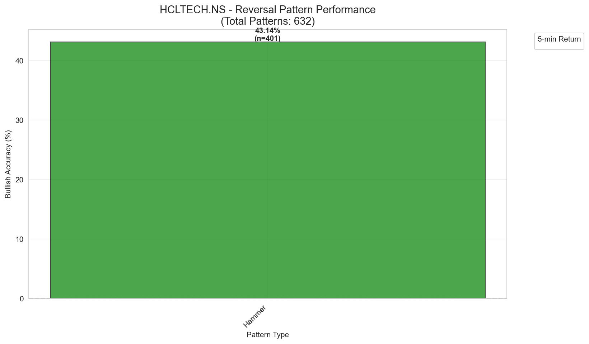
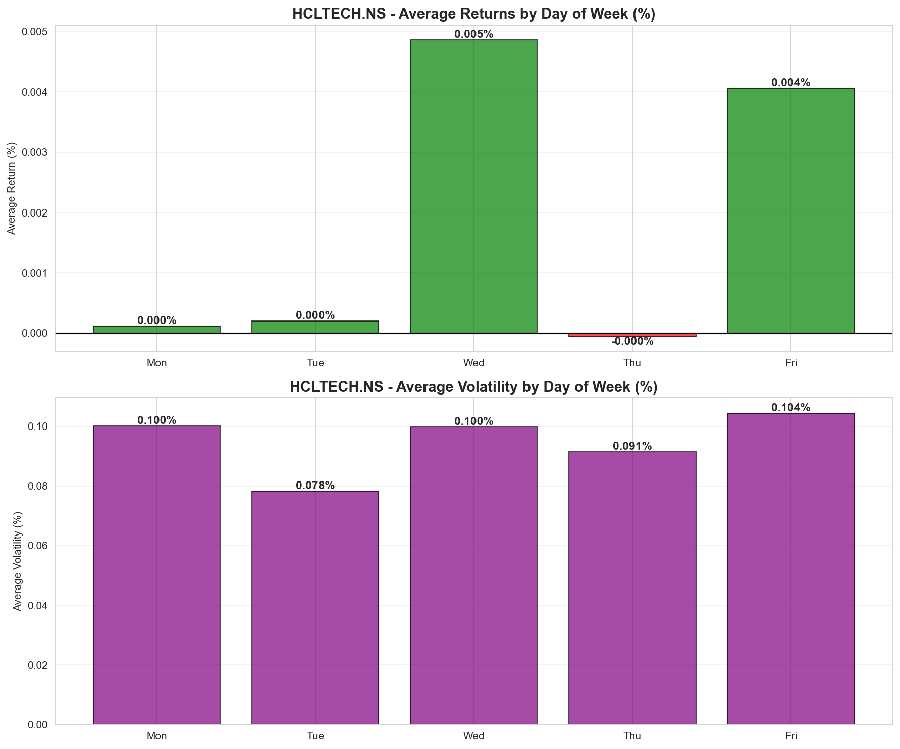
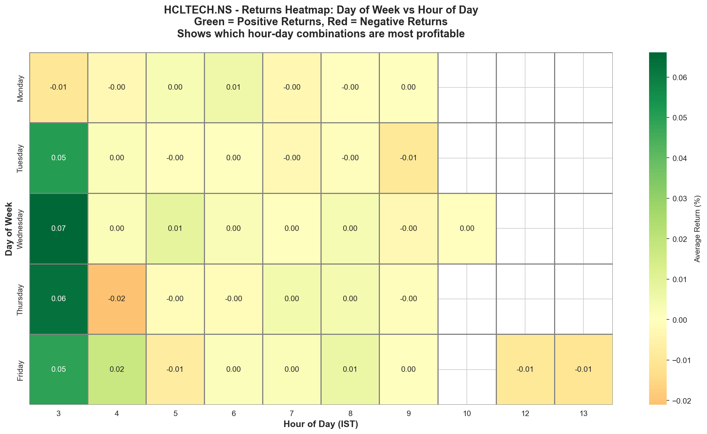
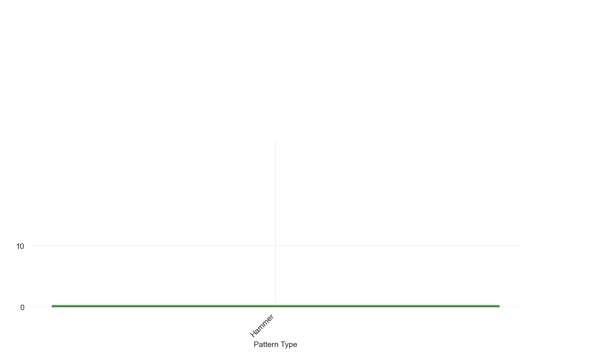
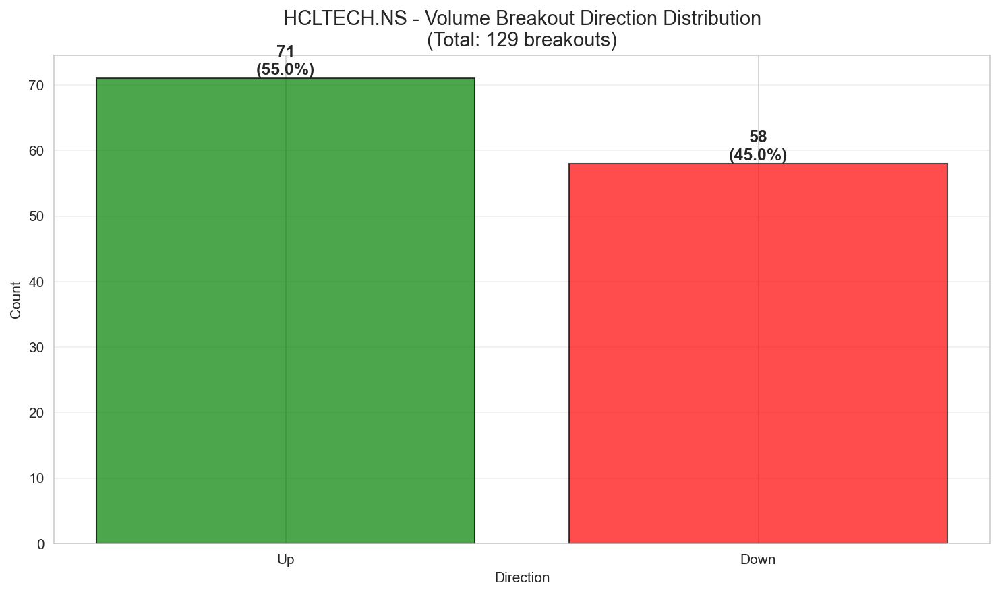
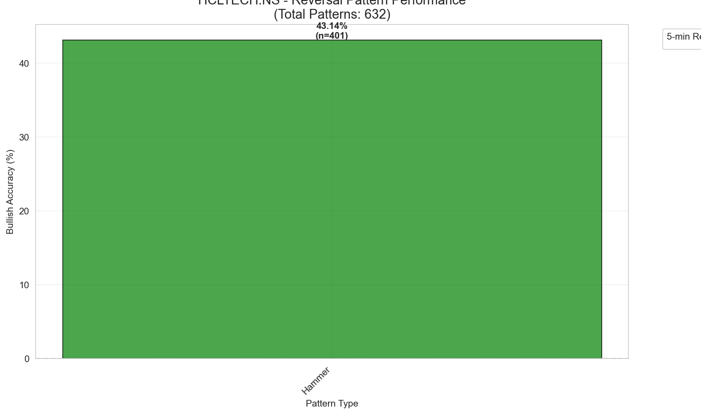
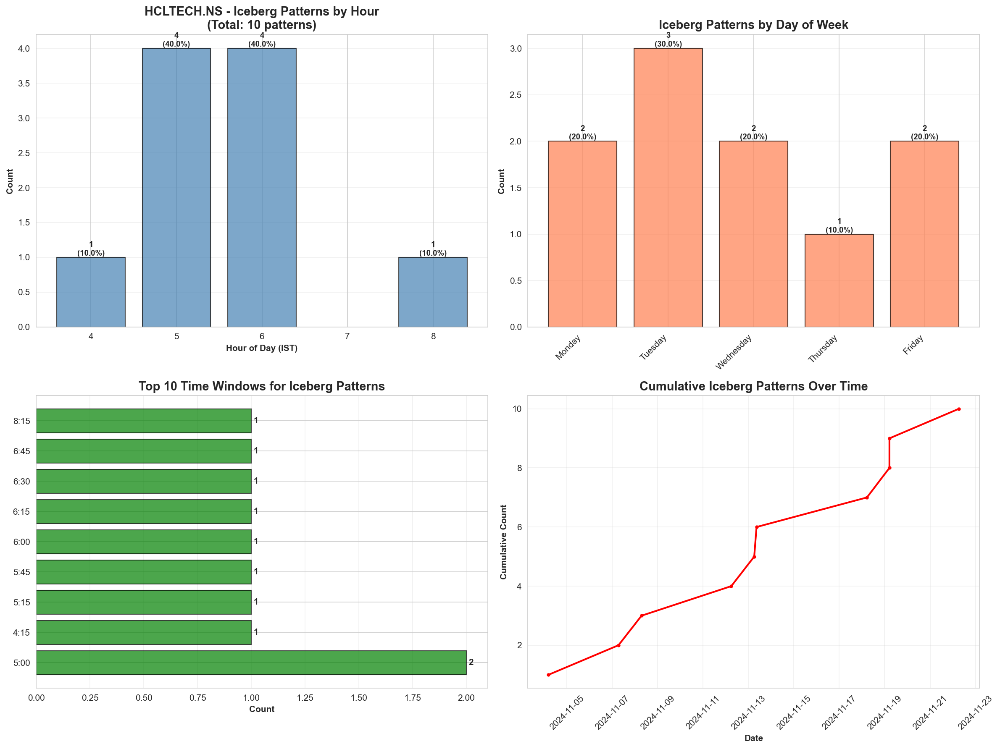
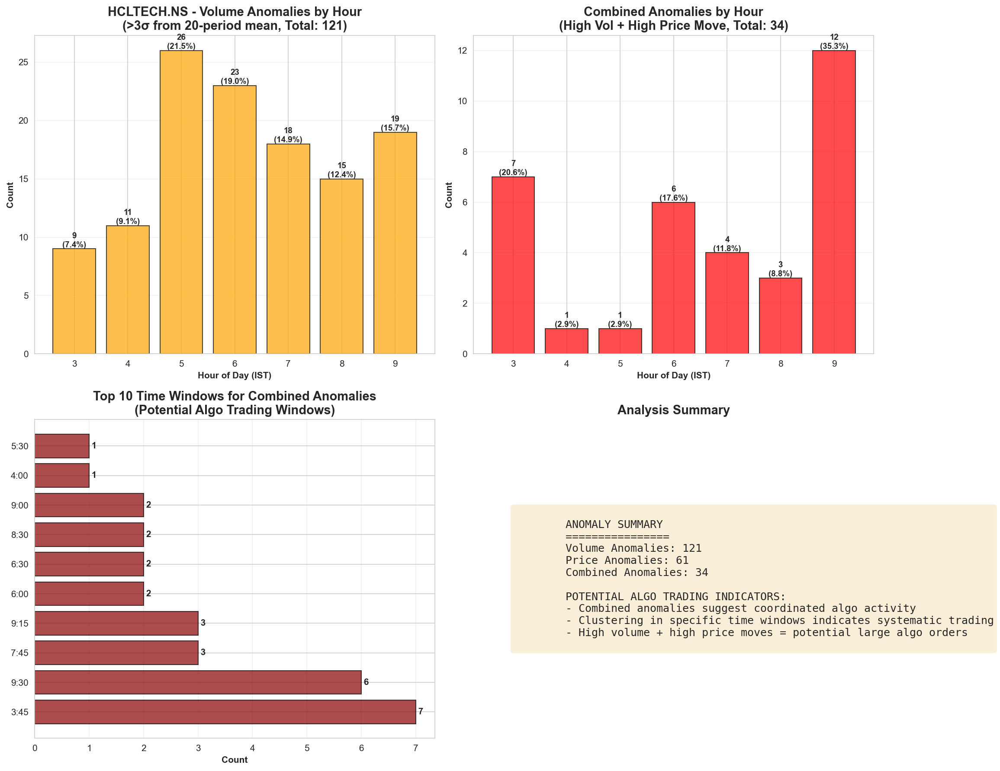

Comprehensive analysis of intraday data to identify time, volume, and price patterns using raw OHLCV data.
Analysis of raw OHLCV data to detect specific behavioral patterns using mathematical normalization (Z-scores).
| Pattern | Count |
|---|---|
| Hidden_Accumulation | 508 |
| Hidden_Distribution | 62 |
| Bullish_Sweep | 4 |
| Bearish_Sweep | 5 |
| Iceberg | 24 |
| Capitulation | 0 |
Count: 10
| Close | Volume | Vol_Z | |
|---|---|---|---|
| Date | |||
| 2024-11-11 04:42:00 | 1858.55 | 1488.0 | -1.124164 |
| 2024-11-06 06:00:00 | 1834.80 | 6437.0 | -0.296364 |
| 2024-11-06 05:59:00 | 1834.00 | 5538.0 | -0.424776 |
Count: 10
| Close | Volume | Vol_Z | |
|---|---|---|---|
| Date | |||
| 2024-11-06 07:14:00 | 1840.10 | 58146.0 | 4.158653 |
| 2024-11-18 03:45:00 | 1863.55 | 67602.0 | 4.086912 |
| 2024-11-11 06:12:00 | 1870.65 | 11786.0 | 3.897215 |
Count: 4
| Close | Volume | Vol_Z | |
|---|---|---|---|
| Date | |||
| 2024-11-18 03:45:00 | 1863.55 | 67602.0 | 4.086912 |
| 2024-11-12 08:04:00 | 1878.30 | 12646.0 | 3.312681 |
| 2024-11-11 08:13:00 | 1864.25 | 4282.0 | 2.213660 |
Count: 5
| Close | Volume | Vol_Z | |
|---|---|---|---|
| Date | |||
| 2024-11-04 06:22:00 | 1750.45 | 7257.0 | 3.415147 |
| 2024-11-21 05:18:00 | 1836.45 | 7062.0 | 2.992540 |
| 2024-11-08 09:08:00 | 1839.05 | 8954.0 | 2.729811 |
Count: 10
| Close | Volume | Vol_Z | |
|---|---|---|---|
| Date | |||
| 2024-11-12 05:48:00 | 1879.95 | 20866.0 | 4.116244 |
| 2024-11-04 04:23:00 | 1771.10 | 31298.0 | 3.797181 |
| 2024-11-19 05:04:00 | 1857.65 | 23657.0 | 3.797021 |
Analysis of returns, volatility, and volume patterns across different times of day and days of week.
| IST_Time | cumulative_return_pct | returns_mean_pct | volatility_mean_pct | Volume_mean | |
|---|---|---|---|---|---|
| hour | |||||
| 3 | 3:00 AM - 4:00 AM IST | 8.151065 | 0.041800 | 0.251967 | 16306.928205 |
| 8 | 8:00 AM - 9:00 AM IST | 1.690461 | 0.002167 | 0.069416 | 3986.619231 |
| 6 | 6:00 AM - 7:00 AM IST | 1.357200 | 0.001740 | 0.073294 | 3867.432051 |
| 5 | 5:00 AM - 6:00 AM IST | 0.395273 | 0.000507 | 0.093056 | 4503.939744 |
| 10 | 10:00 AM - 11:00 AM IST | 0.000000 | 0.000000 | 0.000000 | 0.000000 |
| returns_mean_pct | volatility_mean_pct | Volume_mean | |
|---|---|---|---|
| day_of_week | |||
| Mon | 0.000119 | 0.100043 | 6065.850667 |
| Tue | 0.000199 | 0.078345 | 6066.376000 |
| Wed | 0.004865 | 0.099708 | 6248.627164 |
| Thu | -0.000062 | 0.091464 | 5713.669333 |
| Fri | 0.004057 | 0.104320 | 5574.058025 |



Analysis of volume spikes, breakouts, and volume-price relationships.
Total Breakouts: 129
| Close | Volume | direction | |
|---|---|---|---|
| Date | |||
| 2024-11-04 03:45:00 | 1766.55 | 108331.0 | Up |
| 2024-11-04 03:46:00 | 1770.25 | 58045.0 | Up |
| 2024-11-04 03:47:00 | 1775.85 | 45950.0 | Up |
| 2024-11-04 03:48:00 | 1771.70 | 30022.0 | Down |
| 2024-11-04 03:50:00 | 1778.75 | 58732.0 | Up |


Analysis of momentum, reversals, and price action patterns.
| Unnamed: 0 | pattern | count | continuation_rate | avg_next_return |
|---|---|---|---|---|
| 0 | 3 Up | 266 | 0.454887 | -0.000011 |
| 1 | 3 Down | 273 | 0.465201 | 0.000047 |
Total Reversals: 2

Identifies potential algorithmic/quantitative trading activity through iceberg timing and anomaly detection.
| hour | count | percentage |
|---|---|---|
| 4 | 1 | 10.0 |
| 5 | 4 | 40.0 |
| 6 | 4 | 40.0 |
| 8 | 1 | 10.0 |
| hour | count | percentage |
|---|---|---|
| 3 | 7 | 20.59 |
| 4 | 1 | 2.94 |
| 5 | 1 | 2.94 |
| 6 | 6 | 17.65 |
| 7 | 4 | 11.76 |
| 8 | 3 | 8.82 |
| 9 | 12 | 35.29 |


Analysis of combined indicator signals (requires indicator data).
⚠️ Indicator combination analysis requires indicator data. Run feature engineering step first.
Recent performance trends and patterns from the last 7 trading days.
| Date | Open | High | Low | Close | Return | Range | Volume |
|---|---|---|---|---|---|---|---|
| 2024-11-22 | 1,846.35 | 1,902.00 | 1,836.50 | 1,897.00 | 2.74 | 3.55 | 2,757,474.00 |
| 2024-11-21 | 1,835.00 | 1,839.55 | 1,820.20 | 1,833.30 | -0.09 | 1.05 | 1,815,453.00 |
| 2024-11-19 | 1,837.00 | 1,865.00 | 1,817.30 | 1,819.45 | -0.96 | 2.60 | 2,336,142.00 |
| 2024-11-18 | 1,858.95 | 1,865.05 | 1,815.00 | 1,835.65 | -1.25 | 2.69 | 2,435,084.00 |
| 2024-11-14 | 1,872.00 | 1,897.00 | 1,846.35 | 1,865.90 | -0.33 | 2.71 | 2,450,462.00 |
| 2024-11-13 | 1,866.00 | 1,879.60 | 1,859.10 | 1,865.00 | -0.05 | 1.10 | 1,249,314.00 |
| 2024-11-12 | 1,891.00 | 1,892.95 | 1,864.45 | 1,869.00 | -1.16 | 1.51 | 2,675,873.00 |
Model Components:
Note: Predictions are based on recent trends and should be used with caution. Past performance does not guarantee future results.